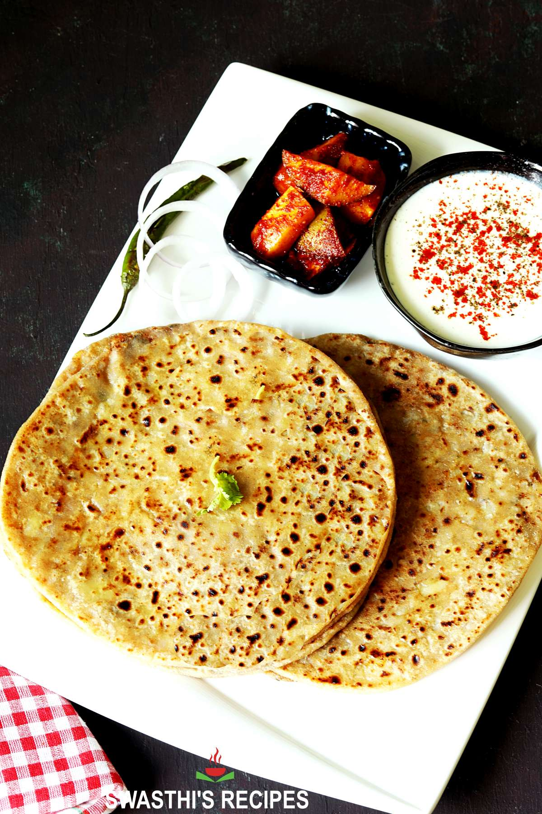

Go to all recipes
Aloo Paratha

Aloo Paratha It is a famous dish of
North India. People love to eat aloo paratha
because it is tasty as well as healthy if made correctly. Beside that is
doesn't require much ingredients to enjoy this dish
Required Ingredients
- Aloo (Potato)
- Wheat Flour
- Ghee (Clarified Butter)
- Some Basic Spices
- Curd or Lassi (If you want to make them more tasty)
- Pickles (Optional)
Steps to make
- Take some wheat flour and make dough adding some salt to it
-
Boil some aloo and mesh them after peeling them after that add spices to
it
- Now take some dough and fill aloo in it then flatten it
- Now heat a pan and add some oil or ghee accordingly
-
Now bake it at mid flame when it turns brownish take it in a plate
-
Paratha is ready now you can serve it with some Pickles and Curd or
Lassi
-
Bonus tip : It takes some time to cool down the stuffed aloo in it so be
careful while eating 😊